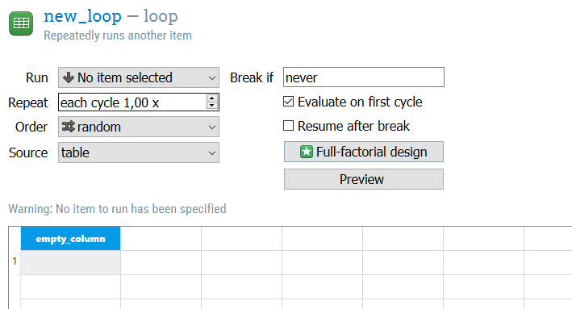
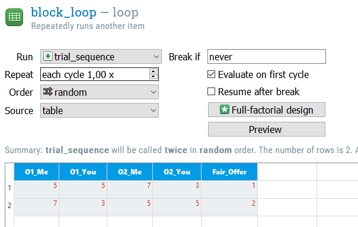
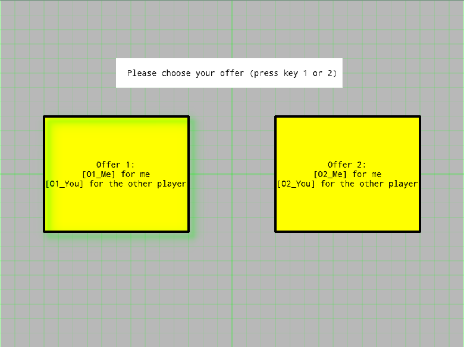
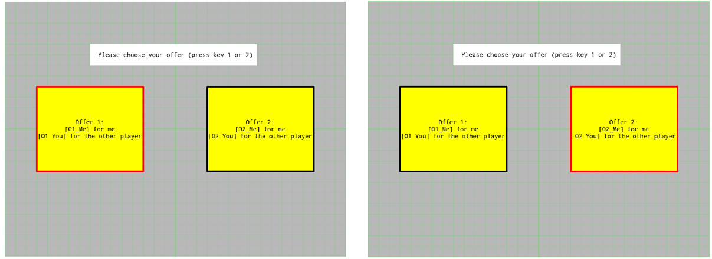
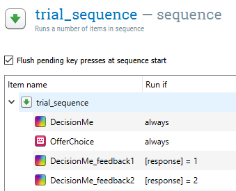
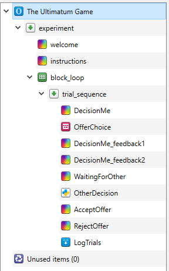

The Ultimatum Game in OpenSesame
Contents
The Ultimatum Game in OpenSesame¶
Note: Part of the text below is adapted from The E-Primer (Spapé, Verdonschot, & van Steenbergen, 2019). Spapé M.M., Verdonschot, R.G., & van Steenbergen, H. (2019) The E-Primer: An introduction to creating psychological experiments in E-Prime. Second edition updated for E-Prime 3. Leiden: Leiden University Press. www.e-primer.com Copyright 2019 by the authors and LUP. Adapted with permission.
Introduction¶
Imagine the following scenario. Your friend (let’s call her Alex) is given an amount of money (say, €10), and is told she should share it with you. Alex can decide how much money you get, and how much she gets. Whatever she apportions to herself is hers to keep, on one condition: you have to agree to her proposal*.* In other words, Alex can propose any division of the money she likes, but the ultimate power lies in your hands: you can accept (and each of you gets your share) or decline (and both of you go home with nothing). What kind of split do you think Alex would suggest?
According to classic economic theory, the only reasonable option is for Alex to propose the maximum share for herself (€9) and the minimum for you (€1). After all, you – the responder – would surely accept €1 as being better than nothing at all, so why would you decline her offer?
When real people were asked to play this Ultimatum Game (Güth, Schmittberger & Schwarze, 1982), however, economics around the world were shocked and astonished to discover that people are not actually all that rational. In fact, responders will often decline unfair offers, even if they, in economic terms, are only shooting themselves in the foot! The players in Alex’s position – the proposers – also tend to be much nicer and tend to make proposals that are only slightly unfair.
display_quiz("questions/question_1.json")
In this tutorial, we are going to program an Ultimatum game where the proposer (the participant) can either decide to propose a fair offer (5 points for me, 5 points for you) or an unfair offer (7 points for me, 3 points for you). After the proposer decision makes the decision, feedback about the response is shown on the screen. We’ll invent a cover story for the participants: we’ll tell them that the responder is a real person connected to the experiment via the internet. In reality, the responder is a virtual agent and just consists of some lines of Python code that makes decisions in a human-like way – rational with some random variation. For this virtual responder, we’ll determine the response behaviour using the following algorithm:
When a fair offer is made by the proposer, I will accept it 80% of the time; when an unfair offer is made by the proposer, I will accept it only 25% of the time.
Building the framework¶
In this tutorial we will create the entire experiment from scratch, and we will use the ‘default template’, which is already loaded when OpenSesame is launched. Therefore, simply delete the ‘Get started!’ and (if shown) ‘Welcome!’ tabs.

We will start with building the framework of our experiment. Since we want to get multiple trials for each testing session, we start with the outer most layer: the block loop. Insert a block loop after “experiment”, and you should see the following:

From here, we define O1_Me and O1_You as choice 1, and O2_Me and O2_You as choice 2. We make a second row where we reverse the order of the choices, and also define which of the two is the fair choice. As of now, we have two trials. We ofcourse want to have more than two trials presented to Player 1. Change the “repeat” parameter to repeat each cycle 5 times.

Then, within the block_loop, add a sequence item. We will adapt that later, but for now it’s good to have it in place. Then, we can start adding trial components in the sequence item.
So, lets think about what we need in terms of OpenSesame objects for one trial. We need:
(1) A sketchpad item for presenting Player 1 two options
(2) A keyboard item to explicitly define which keys Player 1 can press, and to store the answer.
(3) Two sketchpad items for feedback to Player 1. The one which is presented depends on the choice made by Player 1
(4) A sketchpad item that is presented for the duration that Player 1 “waits” for the response of Player 2
(5) An Inline Script item with Python code that determines the choice of Player 2 based on certain probabilities (as defined before)
(6) Two sketchpad items for feedback to player 1 that show which response Player 2 had made. One sketchpad item is presented when Player 2 refuses the offer. The other sketchpad item is presented when Player 2 accepts the offer .
Let’s go through these one by one.
The Decision of Player 1¶
1: Sketchpad item for presenting Player 1 with two options¶
Add in a Sketchpad item, and call it “DecisionMe”. The DecisionMe should present two offers and wait until the participant decides to press either the numerical key 1 or the numerical key 2. Now you can see why we have two rows of trial defined in the block_loop. We can now simply define the variables O1_Me, O1_You, O2_Me and O2_You and the block_loop makes sure that the O1 offer isn’t always the fair or unfair offer. You can call variables defined in the block_loop by using the dollar sign followed by brackets ($[variable]). Here is the Sketchitem how we designed it:

We also need to add a keyboard_response item since we want our Player 1 to choose an option by either pressing 1 or 2. Add a keyboard_response item and set “Allowed responses” to 1 and 2. Note that since there is no correct response, we leave it empty. Furthermore, if you would want the Player to respond within a certain amount of time, you could define a Timeout. Here we won’t do that, since reaction time doesn’t play a role in our set-up.

2: Two sketchpad items for feedback to Player 1. The one which is presented depends on the choice made by Player 1¶
Now, when Player 1 has made its decision, we want to show the Player which decision it made, just so the Player knows that pressing the response worked. To do that, we will copy the “DecisionMe” sketchpad twice and call those “DecisionMe_feedback1” and “DecisionMe_feedback2”. In one of the sketchpads, we draw a red line around the left box, to indicate that the Player chose that box. In the other sketchpad, we draw a red line around the right box, to indicate that the Player chose that box. To draw the red line you can simply use a red square without fill and draw it around the borders of the decision boxes.

Now the trial_sequence item we inserted earlier comes in handy. If we go to that item we see that it automatically added all the items we have created so far. We also see a “Run if” column. OpenSesame defines certain variables themselves (see here), and one of them is the [response] variable, which catalogues which response the Player made. So, if we set “run_if” for “DecisionMe_feedback1” to [response] = 1, this sketchpad will only be presented if the Player presses key 1! Do the same for DecionsMe_feedback 2, and it should look like this:

3: A sketchpad item that is presented for the duration that Player 1 “waits” for the response of Player 2¶
This one is easy. Just add a sketchpad that is presented for a certain duration of time, and shows Player 1 that we are waiting for the “response” of Player 2 (using a Textbox). We call it “WaitingForOther”.

The Decision of Player 2¶
Note
For this part of the tutorial you will need to launch the script using Google Colab/Binder
Great, we have the first part of the experiment nailed! Let’s continue to the response of Player 2.
4: An Inline Script item with Python code that determines the choice of Player 2 based on certain probabilities (as defined before)¶
Now comes a trickier part. Since we don’t actually have a Player 2, we will now add some artificial intelligence to the experiment that determines Player 2’s decision. Therefore, we will use the feature of OpenSesame to use Python scripts in the trial sequence. The decision of Player 2 should be based on whether the offer of Player 1 is fair or not. If it’s fair, there is a high acceptance rate. If its not fair, there is a low acceptance rate.
First, lets make a list of the possible decisions of Player 2, and store that list in a variable called “Decision”. The possible decisions are “Accept” and “Reject”. You can type in the chunk below to make the list. Don’t look at the solution right away, try to solve it yourself first!
# decision = ...
# print(decision)
Now, just to remind ourselves, we want to build a little script that outputs this behaviour: When a fair offer is made by the proposer, I will accept it 80% of the time; when an unfair offer is made by the proposer, I will accept it only 25% of the time.
For this kind of decision-making, we can make use of an if…else statement. This statement will only run part of the code if a certain test condition is met. Let’s try it out. Write down a script that decides for you if you should or should not eat the banana based on its colour, and prints out the decision.
# banana = "green"
#
# if banana == ...:
# ...
# else:
# ...
In our case we ofcourse don’t decide between eating or not eating a banana, but between accepting or rejection the offer we got based on how fair the offer is. Lets start by programming an “if…else statement” that always accepts the offer if its fair, and always rejects the offer when its unfair. Call the decision “choice”, and print out the choice made. Test your script by changing the “response” variable to “Fair” or “Unfair”.
# response = "Fair"
#
# ...
#
# print(choice)
This is a good start. Now, we need to add in the observation that humans in this game don’t always make the same choice. Rather, there is a certain probability (instead of certainty) that a Player accepts or rejects the offer. We need some kind of way to throw a dice each time Player 2 gets an offer, and the probability of the dice landing on “Accept” or “Reject” should depend on the fairness of the offer. As dice-roller, we will make use of the Python module Random, and within that module we will use the choices method. This method picks a value from a list (our decision list in this case), and you can specify the “weights” (how likely it is that an element of a list is chosen) as well. So, let’s build a decision-making if…else statement that accepts the offer 80% of the time when the offer is fair, and accepts the offer just 25% if the offer is unfair. To help yourself, check out this link for an explanation of the random.choices() method.
# from random import choices
#
# decision = ["Accept", "Reject"]
# response = "Fair"
#
# if ...
#
# else...
#
# print(decision)
Alright, we have have the body of our Python script that we can use in OpenSesame. Now, there are some OpenSesame specific things that we need to look into. Go back to your OpenSesame UltimatumGame script, and insert an inline_script after the WaitingForOther object. Call this inline_script “OtherDecision”. You will see two tabs: the prepare tab and the run tab. Shortly said, during an experiment the “prepare” script will be ran before the trial starts, and the “run” script will be ran during a trial (for more information see the OpenSesame website). In our case, what we can already prepare is importing the random.choices() module, and making a list of possible decisions. The actual decision depends on the decision of Player 1, so we will necessarily need to run that in the “run” tab.
This is our solution to coding the decision of Player 2:

A few things to unpack here in the “run” script. First of all is the way we set the condition:
var.response == var.Fair_Offer
Remember that the responses possible are “1” or “2”. If you take a look back at our “block_loop”, you see that we map Fair_Offer on “1” or “2”, depending on which decision box (left or right) has the fair offer. So, if the response is 1, and the Fair_Offer is also 1, then that means that was a fair offer!
Then, something that you also probably noticed is that we put a var in front of some variables. This is how OpenSesame communicates with the Python environment, and allows us to use the variables in the OpenSesame. OpenSesame has its own (Python-like) scripting language and environment which is separate from the Python environment. Therefore we need to use tricks like these to build a bridge between the two environments (for more information, see this link).
Finally, we have to let Player 1 know what the decision was of Player 2. Therefore, again, we make two sketchpad items. One of which is presented when Player 2 accepts the offer, the other one is presented when Player 2 rejects the offer. Call these sketchpads “AcceptOffer” and “RejectOffer”. These sketchpads should communicate the outcome of Player 2’s decision. Then, go back to the “trial_sequence” object, and change the “Run if” of the “AcceptOffer” and “RejectOffer”:

As you saw in the question, something there is happening that we probably would not want to have. If there is no offer given, there shouldn’t be a response from Player 2. Starting from our decision script for Player 2, can you find a solution so that, when no response is given, Player 2 simply doesn’t do anything? In OpenSesame, if no response is made the “response” variable is set to “None”. Furthermore, it’s important to print out the choice made, only if there was a choice. Note that there are multiple solutions.
# from random import choices
#
# decision = ["Accept", "Reject"]
# response = "None" # Change it to "Fair" and "Unfair" to test your script
#
# if response == "Fair":
# choice = choices(decision, weights = [80, 20], k=1)
# else:
# choice = choices(decision, weights = [25, 75], k=1)
#
# print(choice)
Logging results and running the experiment¶
Now we have everything to run the experiment. However, we are interested in analyzing the results afterwards ofcourse. OpenSesame gives you a really easy way to store every single variable of each trial (including the variables we defined ourselves). Therefore, insert a “logger” item after the RejectOffer and AcceptOffer items. We call the logger item “LogTrials”. Furthermore, it’s also important to don’t start right away with an experiment, but first give instructions. So add instructions before the “block_loop”, and a logger item at the end of the “trial_sequence”, and it should look something like this:

Now we are set to run the experiment, and record everything we want (and way more). Press the green arrow (or use the shortcut “CTRL + R”) to start the experiment. Insert the subject number, and test the experiment.
The experiment should look something like this:
Now you have a framework to test social decision making in humans. From here on you can tweak many variables depending on your hypothesis. Perhaps you are interested in more than just two options? And what will happen if Player 1 notices that Player 2 is very easy in accepting unfair decisions? Many possibilities to go to from, but you have a great basis to start from.